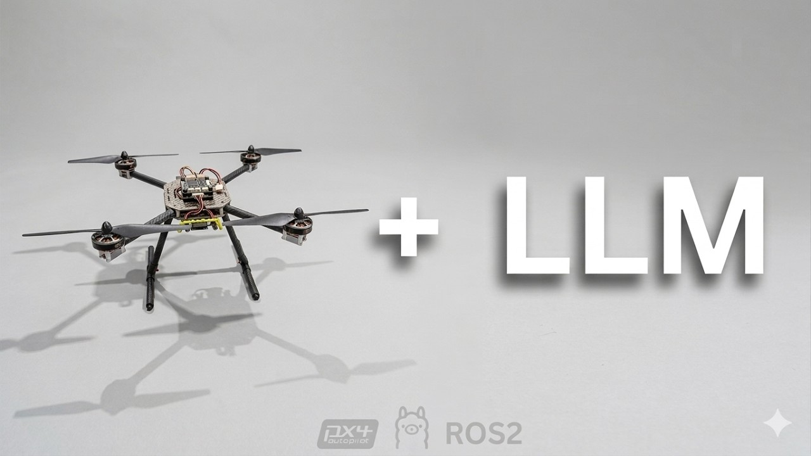
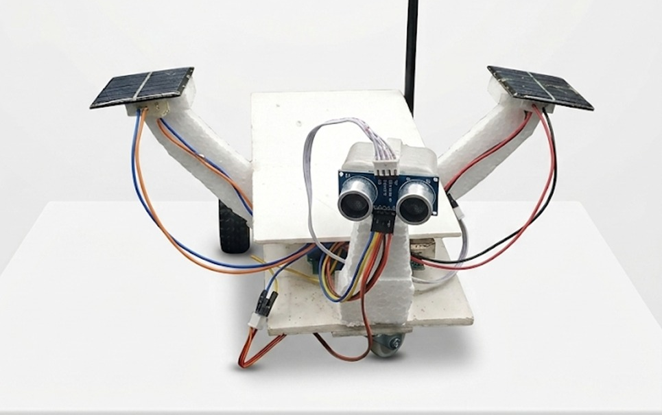
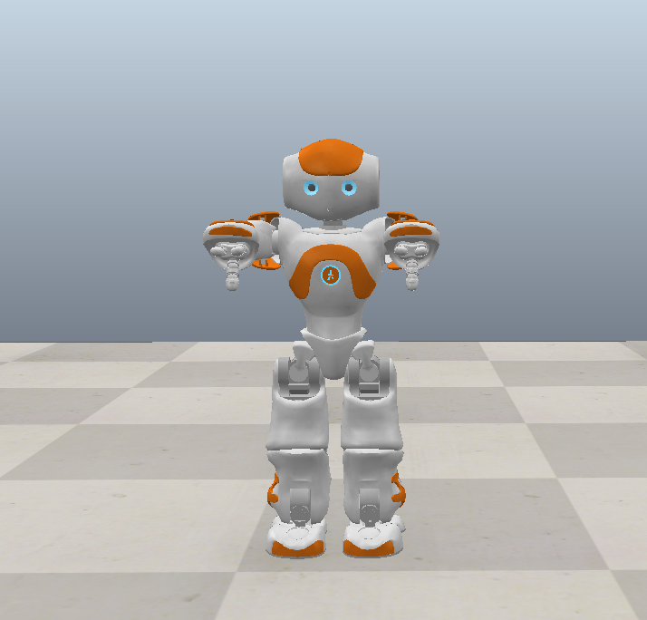
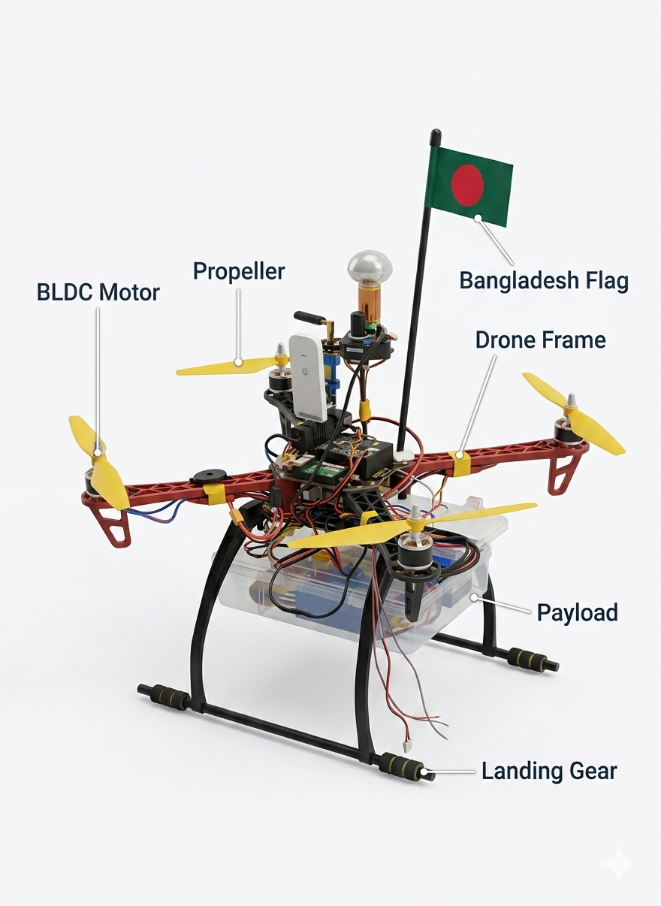
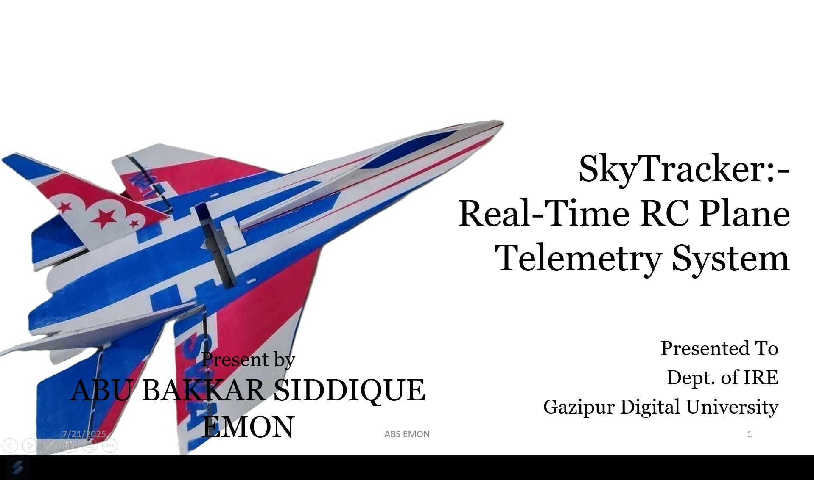
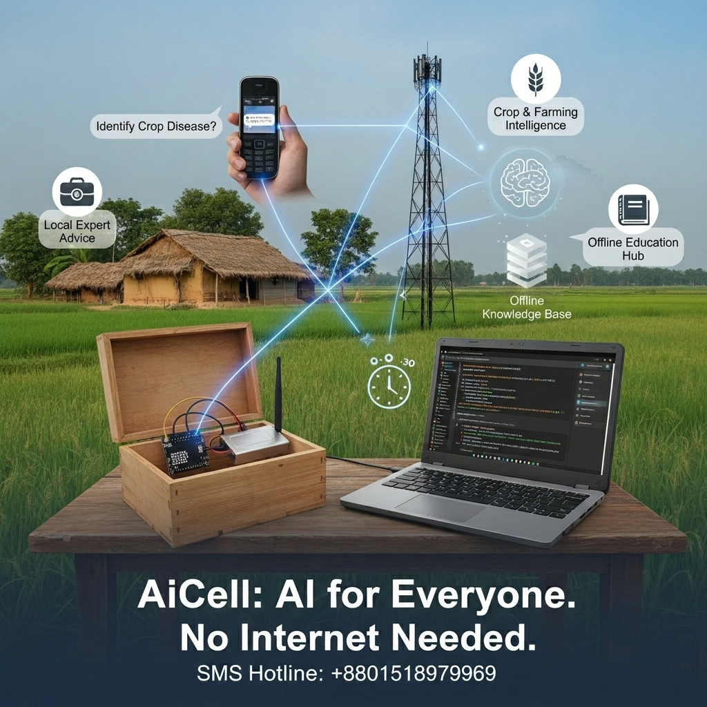
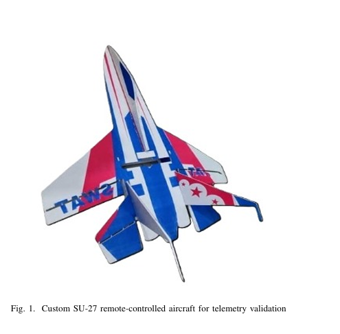
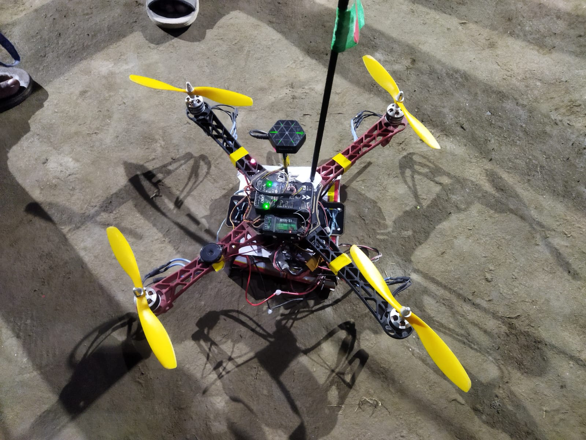

Projects

Runs an LLM locally with prompt-based fine-tuning to control a drone from natural-language commands, connecting a backend Python script to a ROS2 Jazzy / Gazebo simulation.

An autonomous rover prototype combining onboard CNN-based image validation and a tiny VLM for scene analysis, prioritizing textual insight transmission to overcome communication latency and bandwidth limits in deep-space scenarios.

A cardboard-bodied assistant robot with Arduino-driven hand/face servos and a voice-to-voice conversational system that responds with speech and expressive movement.

Capstone project: an affordable disaster-response drone with Wi-Fi restoration, Tesla-coil wireless power transfer for swarm charging, and 300g emergency payload delivery. Uses VGG16 for disaster classification and a vision-language model for real-time damage assessment, with an n8n workflow for auto-analysis and logging.

A low-cost IoT telemetry and risk-prediction system for RC aircraft, published at ICCIT 2025.

Routes SMS queries to specialized models for education, farming, health, and emergencies — bringing instant AI answers to rural students and farmers without smartphones or internet.

Manually built, assembled, and tuned a lightweight RC SU-27 jet, with Pixhawk integration for flight stabilization and telemetry.

Designed a GPS-enabled quadcopter from scratch with responsive flight control, ESCs, and brushless motors.